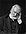

Clarisse Ratsifandrihamanana
|

|
Vous pouvez partager vos connaissances en l’améliorant (comment ?) selon les recommandations des projets correspondants.
|
Clarisse Andriamampandry Ratsifandrihamanana est une poétesse et écrivain d'expression malgache. Elle est née le 5 décembre à Fénérive-Est en 1926 et est décédée à Antananarivo le 28 juin 1987.
Mariée au Dr Henri Ratsifandrihamanana en 1946, elle a eu 8 enfants. Clarisse Ratsifandrihamanana avait commencé à écrire très jeune, mais elle ne s'était véritablement consacrée à la littérature qu'après le décès de sa troisième fille en 1950. Auteur inscrit au programme scolaire et universitaire, Clarisse Ratsifandrihamanana a reçu sept prix littéraires, était membre de l'Académie Malagasy et a été élevée au rang d'Officier de la Légion d'Honneur.
Son style littéraire est très diversifié : romans, nouvelles, poèmes, théâtre, contes, essais, pensées... Elle s'était surtout fait connaître dans le domaine de la littérature engagée. Toutefois elle a également écrit sur des thèmes très diversifiés tels que l'amour, l'amour filial, les chroniques, la nature.
L'ensemble de son œuvre, constitué de 23 d'ouvrages édités et d'une dizaine de manuscrits inédits, est l'une des plus riches productions de la littérature malgache.
Ses œuvres les plus connues sont :
- Ny Zanako, I et II (roman)
- Lavakombarika (nouvelles)
- Salohy (recueil de poèmes)
Ont été édités récemment:
- Ramose (roman)
- Lohataona sy Rririnina (roman)